Moments.
Not every piece of the archive is an interview. These are the short ones: a single answer, a single line, forty seconds on a street somewhere. They are too short to carry a page of their own, so this is the page they share. Every quote is a contiguous run of the tape, checked against the transcript.
-
Asked about the shortcomings of American culture around grief, she answers that the shortcoming is that there is almost nothing there.
the world just kept moving even though my world was ending
-
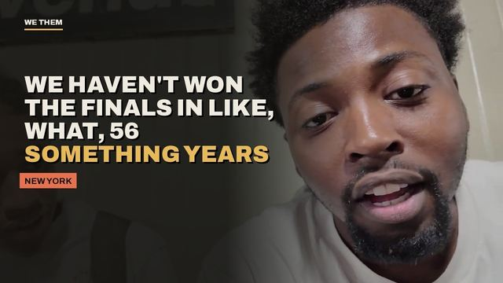
Sat down on a bench mid-vlog, a New Yorker tries to say what the win is actually worth.
if you’re in New York, the world’s watching
-
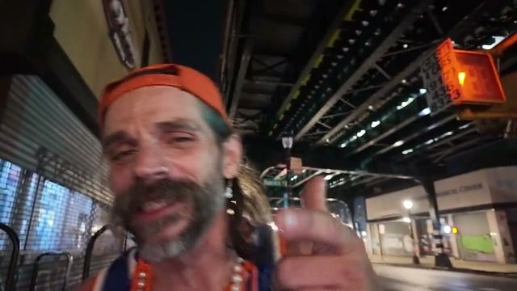
Carell, 40, on a Bushwick street the night the Knicks won, doing the arithmetic out loud that every New Yorker his age can do from memory: fifty-three years since the last one, and he was thirteen watching...
we’re a sports city, bro, but like, we’re a basketball town
-

Bitcoin Pizza Day marked from Islamabad, Pakistan: what happened in 2010 when ten thousand Bitcoin bought two pizzas, and why a network of builders still marks the date fifteen years...
big revolution always starts with small ideas
-

Gift, in Nigeria, tells the pizza story to camera and keeps flagging the bits he is not sure of, which is the most honest way anybody has told it on this channel.
that’s what make crypto culture interesting. People believing in something before even the rest of the world understands it
-
A Pizza Day message delivered in full patois from Botswana, with shout-outs to Jamaica and Zimbabwe, and it is the only entry on this channel that gets the history exactly right while rhyming.
Thank you my man Laszlo. You done bought them pizza for 10,000 Bitcoin
-
Twenty-seven seconds on why the map is wrong.
Esports is not necessarily something that’s just relegated to Western countries. It’s built all over.
-
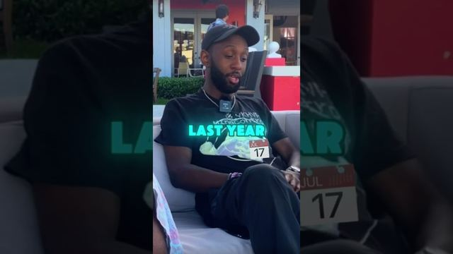
The whole arc of an organisation in twenty-six seconds, told without a single flourish.
Started Blackhand about three years ago. It was a Twitch streaming group during the pandemic.
-
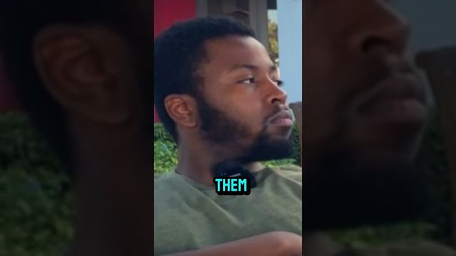
The other side of the esports story, and the reason a community-owned org exists at all.
Last year when we won the Pokemon Unite tournament, none of those players gave us anything. We’re currently in a dispute with them to receive the phone.
-

Marissa Schmarzo on how she got into Web3: Maceo invited her to his Discord, and the people held her before the technology did.
The question is, what had me join or be interested in crypto and Web3? And the answer is Maceo, the founder of We Them Media.
-
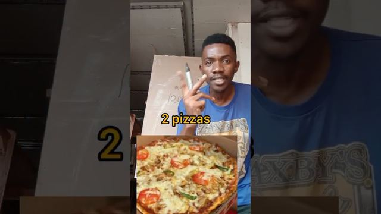
From Nigeria, a contributor asks if Bitcoin Pizza Day was the greatest fumble in history and answers no: it was a spark.
16 years ago, someone traded it for just two pizzas. And today, it is worth a hundred millions of dollars. Do you think this is the greatest fumble in history?
-
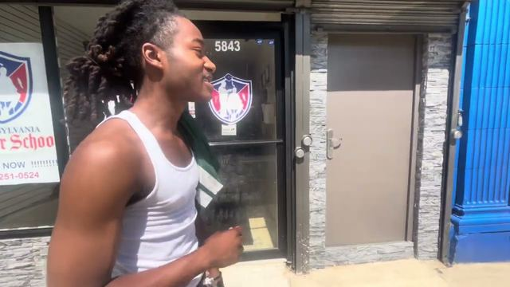
A short afternoon check-in with somebody in the middle of a record.
May’s here, right? June’s about to be on her ass
-

Filmed in Gwarimpa, Abuja, on the way past a studio.
Crypto, crypto, crypto, man. It’s a cultural assembly
-
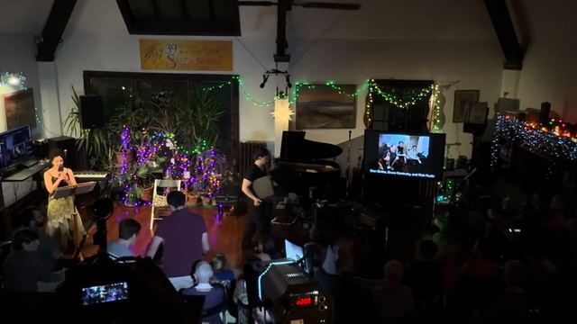
A composer introduces two of his own pieces, starting with Frame, built on one line he took from a documentary: music is a frame for silence.
Before that there is a small mystery about the instrument in the room.
-
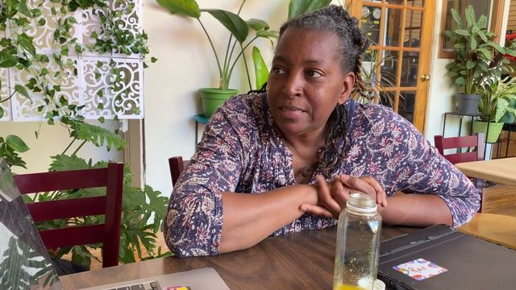
Rae Whatley, a Jikiden Reiki Shihan, senior teacher, in Philadelphia, explains a difference in how the thing is taught, and why it is not the hurdle it looks like.
Reiki is not a belief system but something that you can incorporate into all aspects of your life
-
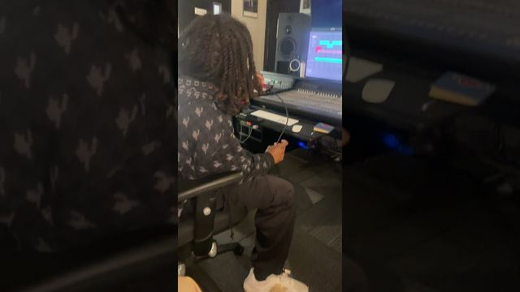
A producer at the desk in a studio session works out the opening: forty-one seconds of the part of the process nobody usually publishes.
trying to do like the opening
-
The tables turn in the Temple studio: Maceo, who was a rapper before he was a journalist, puts the camera on Yasukay and gets two minutes of verse, unbroken.
I don’t need a camera, I got a phone
-
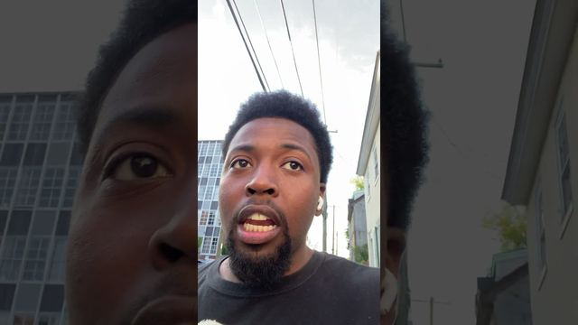
Back home in Philly, a note to camera after a day of two interviews: one at a barbershop, one with a baseball umpire.
I’m excited to keep doing more content now that I’m back in Philly. It’s been a great day. I’m feeling great.
-
Pulled aside on a loud floor at Proof of Vibes 2026, Palash, a filmmaker, a builder, and one of the event’s sponsors, explains the thing he actually made.
what I wanna do is host a hackathon-style film festival. Wow. At multiple locations
-
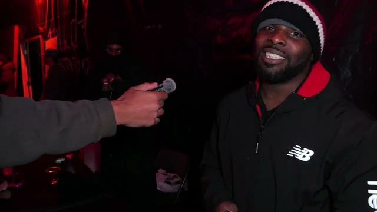
Ninety seconds on a packed floor, mid vibe check, and an artist who drove the distance gets the mic for as long as it takes to say where to find him.
All the way from Atlanta to Denver
-
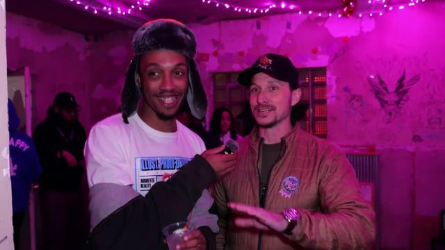
Worldwide Russ stops on the floor of Proof of Vibes 2026 to recognise one of his MVPs, and the story is better than the title: somebody who showed up four years ago with no role and no invitation, started...
the vibes have stayed the same. It never changed
-
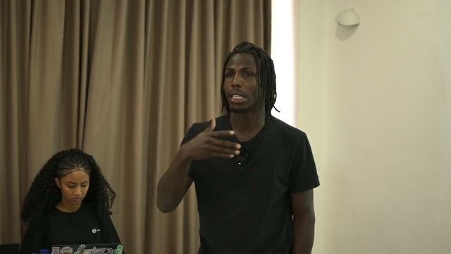
A pitch for Nexus Pay, a blockchain payment product aimed at Kenya and Ethiopia, and the problem statement is all local numbers: 17 per cent of Kenyans unbanked, inflation at 9 per cent, a 24 per cent currency...
the youths right now wanna get paid in crypto and spend it in crypto
-
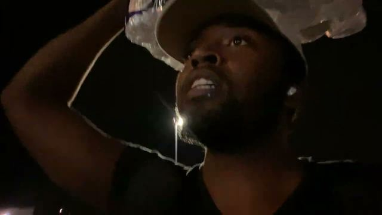
Groceries done, a cooler bag in hand, and a detour on the way home to find out whether the gym is still open at one in the morning.
if not today, tomorrow
-

Devin, a filmmaker from Charlotte, introduces himself in one take because that is the challenge his friend Maceo set him.
I’m gonna have to get out of my comfort zone and go up to strangers and ask them interesting questions
-
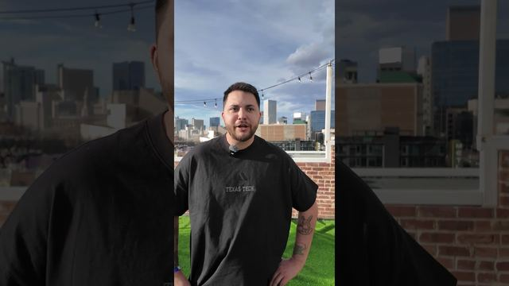
Asked for the best part of a songwriting camp, the answer is the room rather than the curriculum: being around other creatives, including influential ones, and getting close enough to see how they actually...
I definitely learned some really easy tricks to get out of a song really quickly on the decks
-
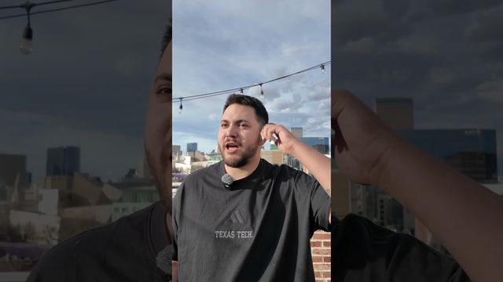
Asked about the sounds moving through the scene, he splits the question in two and is candid about both halves.
I can’t get into it, but they like it. Shout out to them
-
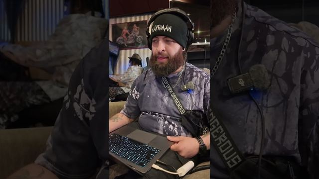
Asked what has been most interesting in electronic music lately, he starts with a return, minimal dubstep, the old style, coming back hard, and then with an expansion.
It really shows you that there is a home in this. You can make it a career
-
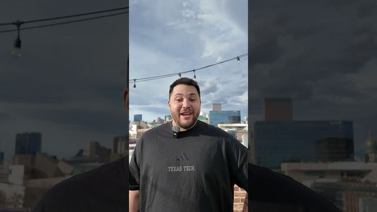
Asked what more people ought to know about him as they find his music, a musician skips the music entirely and talks about his daughter, who has just turned eight, and what being a dad for eight years has...
I am a family guy, personally. I have a daughter at home
-
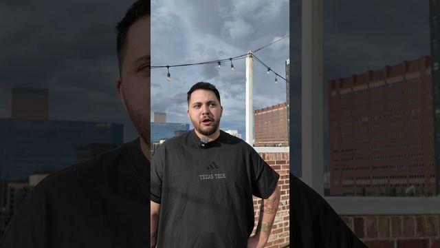
In Denver, an artist on why making it work as an artist is not nerve-racking: seeing others succeed, and finding you are not so different.
It’s definitely not nerve-racking for me at all. I like seeing other people succeed.
-
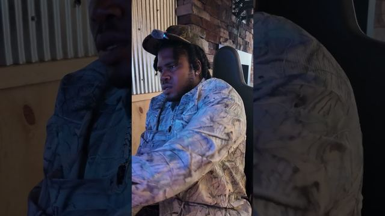
Forty-four seconds on the one thing he thinks ends an artist, and he is not talking about the music.
You are cooked as an artist once you start faking it
-

Twenty-seven seconds, and all of it is one answer.
It comes from Adamantium, which is the metal that Wolverine uses for his claws
-
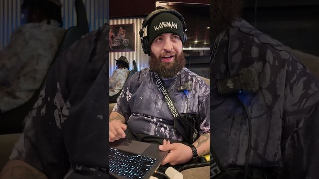
An EDM fan on how the music became his home when he was on a dark path, from a first show at 12 to finding his way back.
I was going down a really dark path and then I found EDM music and just kind of made it my home.
-
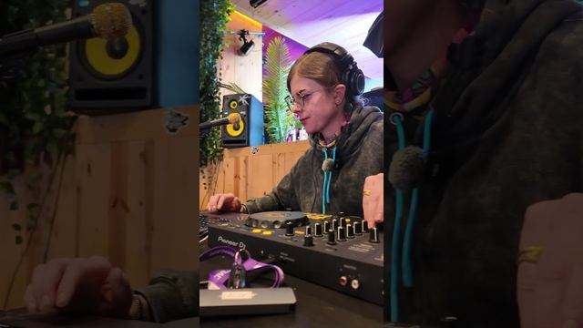
In a Denver studio session, a joke about a rolly chair turns into a request to hear a saxophonist’s tracks, then back to work.
Imagine if you had a rolly chair and you’re just like flying around, that’d be so dangerous. That could be your thing.
-
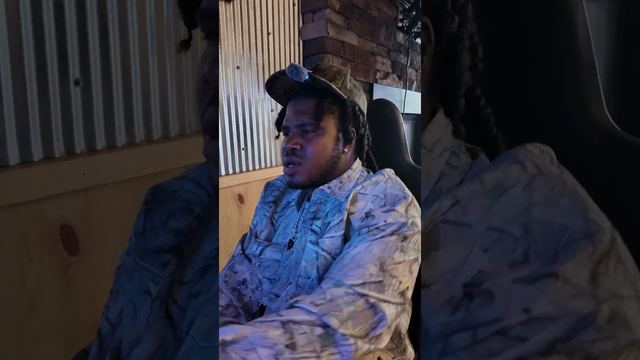
On the influences that built his taste, and the small shock of walking around Denver and hearing the music he grew up on coming off the...
I’m just surprised to come to Denver and be hearing Dave East on the street
-
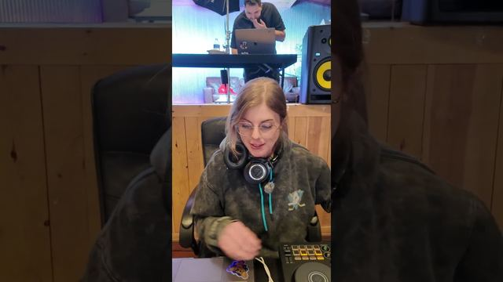
Asked what is most interesting in dance music right now, AlyV answers with the speed of the technology, and the follow-up puts AI in front of her.
I think it’s cool as long as you’re transparent with your brand
-
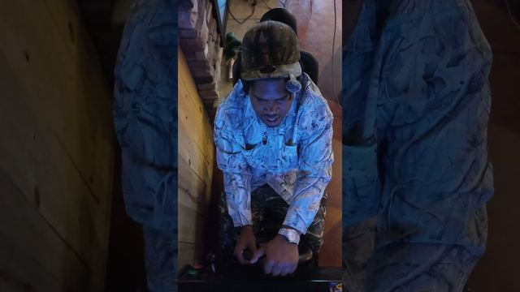
Asked which artists he has watched grow most, Kalib answers with a map of a whole scene instead of a list.
Once you can understand that it’s a business, you’ll be able to understand how to articulate
-
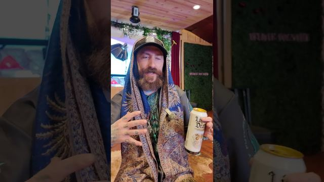
Asked for his favourite memory since he started making music, Bryce does not name a show or a release.
just when I like bought my laptop and got my first DAW, which is FL Studio
-
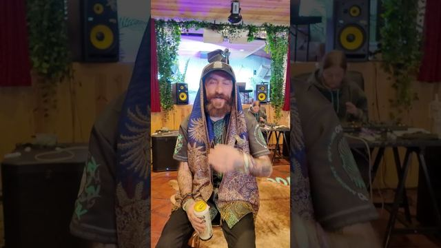
He was scrolling Facebook, saw what Mr.
everybody needs to stay positive and just give love to everyone
-
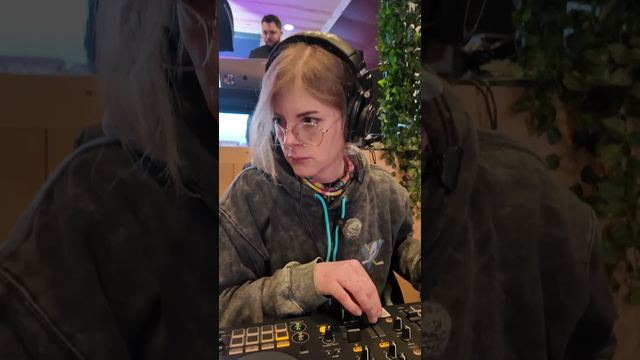
Aly V rehearsing for the final show, thirty three seconds, posted by We Them Media on March 29, 2026.
I thought we had more time.
-
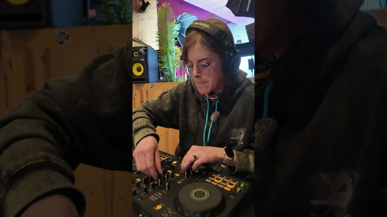
In Denver, an artist performs his own material straight to camera: just over a minute, no beat behind it and no second take.
Yo, what up? This is an Ali V original.
-
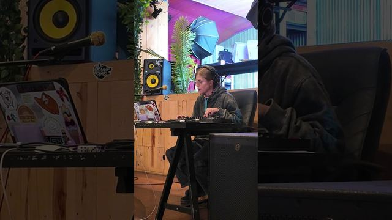
Two musicians at a songwriting camp talk horns: one gave up the trumpet over the cleaning, and keeps his respect for sax players.
I feel like horn instruments. I played the trumpet.
-

In Denver, a musician with no Instagram to shout out still has a stage name: Small Sprout.
I don’t even have Instagram.
-
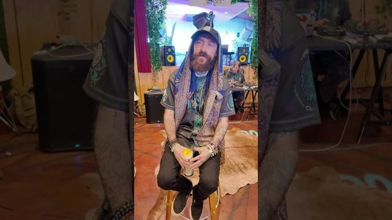
A 35-year-old Deadhead on when music took hold: all kinds of genres at 12, and his first Dead show, in California in 1993, at three.
listening to all types of genres at the age of 12,
-
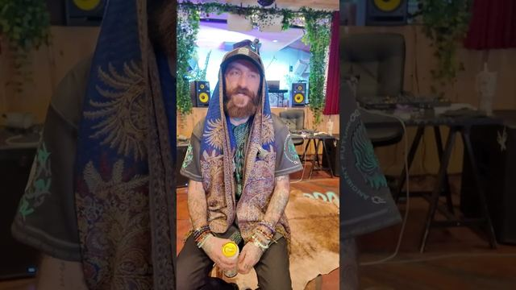
Asked for his dream collab this year, a producer says he is not at that point yet, and names three for later.
That’s a hard question because I feel like I’m not at that point to even collaborate with anybody I would like to at the moment.
-
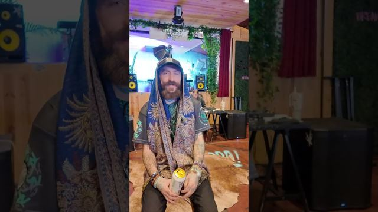
A Denver artist and self-described spiritualist on where his songs come from: time in nature, and ideas that arrive on a hike.
I’m a spiritualist
-
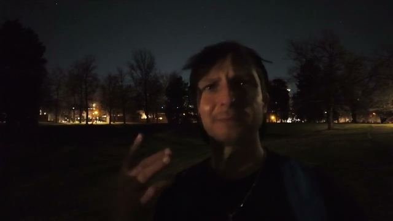
A walking history lesson at Cheesman Park, on ground that was a cemetery and, he says, a Native American burial ground before that.
I felt like some sort of spiritual feeling that this is an important place
-
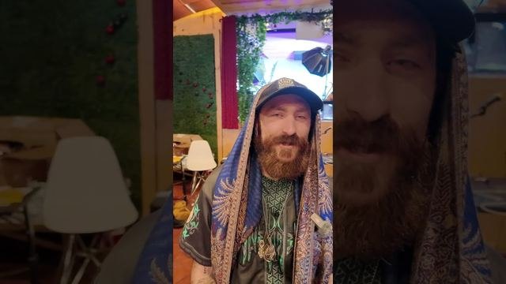
Breckenridge snowboarder Bryce Williams, riding since eight, on mountain culture and life as a rail guy.
everybody that’s local kind of goes out and rides.
-
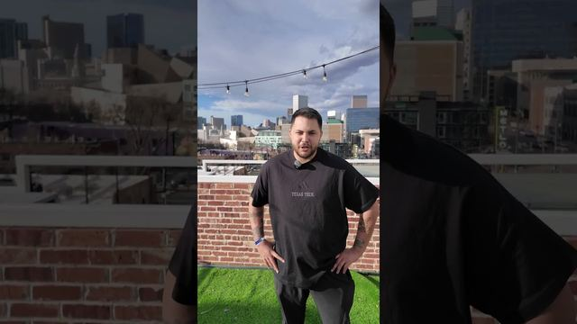
Chronically online for everything except the thing it could be doing for him, and honest about it.
I want to tap into emotion. I want to make people laugh. Okay. On my videos a lot
-
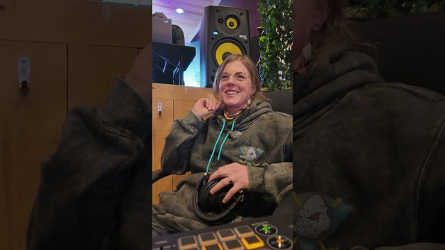
Asked what it has been like as a woman in the electronic music scene, AlyV starts with the count: you notice you are outnumbered in a room, and then with why it lands lightly on her.
I see humans as humans no matter what
-
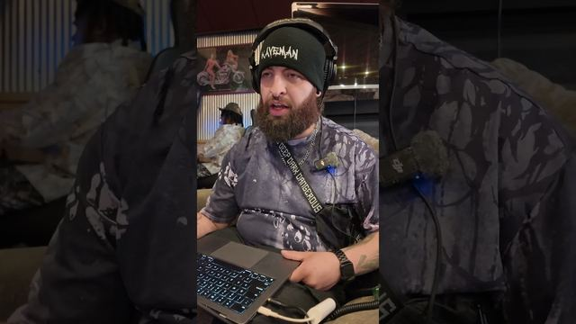
Asked who runs electronic music on socials, the answer is Subtronics, Excision and Truth, the New Zealand act whose merch sells out every drop.
Subtronics really kills his social game. Excision, of course, his social game is phenomenal.
-
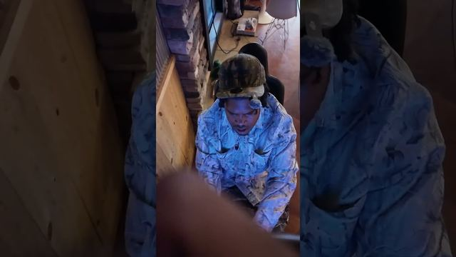
Kalib, an engineer and artist, on what he posts: “I have success on my social media because I invest and then I know what people like seeing me do.” And what is that?
I have success on my social media because I invest and then I know what people like seeing me do.
-
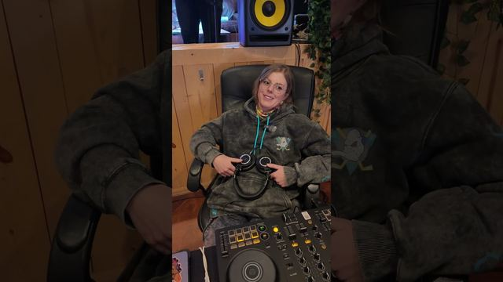
An electronic producer who does not think in genres is asked to name his own, gets as far as wonky, space bass and glitch hop, and then makes the better argument: that the endless splitting into sub-genres...
it just gives people more of a reason to, like, go in on what they love
-
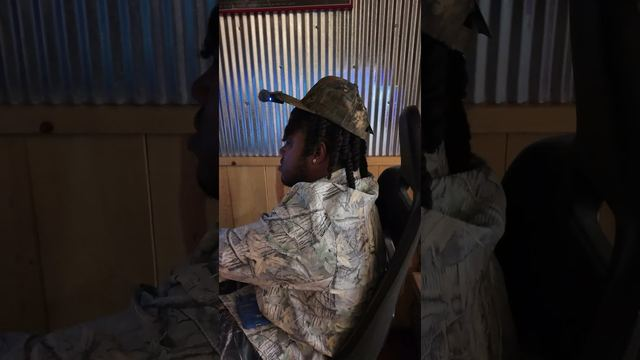
A working artist lays out the rap business without any of the comfort.
you’re not really getting paid as an artist if you’re not getting paid to do shows
-
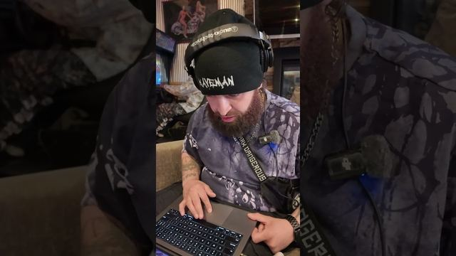
Asked what is best about the community around him, he does not name a venue or a night.
it really gives people the space to kind of do their own thing and expand and experiment rather than just cut like cookie cutter stuff
-
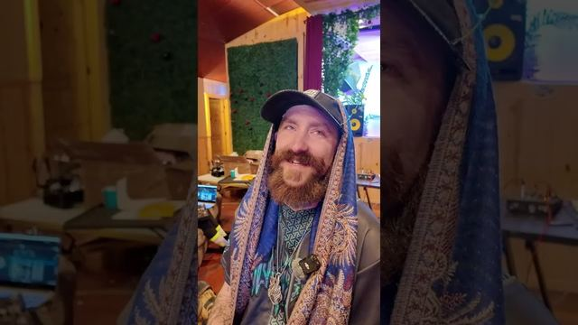
What he likes about Colorado is the culture, and by culture he means what people do outside: snowboarding, skiing, skating, scooters, dirt bikes.
Just chill with the forest
-
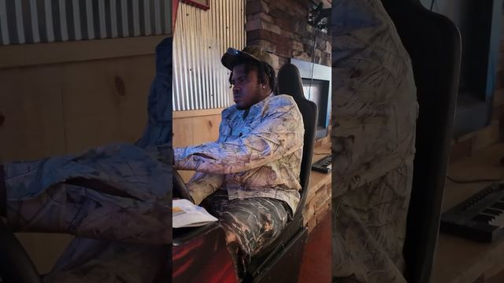
He opens with the flat version and then argues himself somewhere more interesting.
Artist development is dead
-
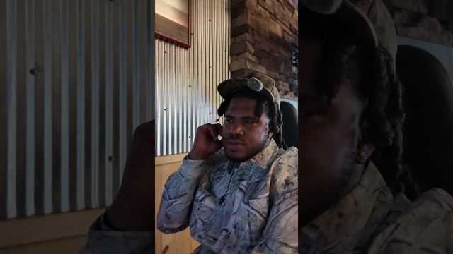
Asked for a favourite song, an artist and engineer names a year of projects instead, from Wale and G Herbo to Earl.
I don’t really have a per se number one favorite song, but I loved a lot of projects that came out in the last year.
-
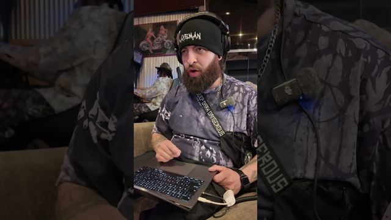
A Denver producer on the lesson of his last year: simplify, because too many plugins and sounds muddy everything, and silence can be nice.
Really trying to simplify stuff.
-
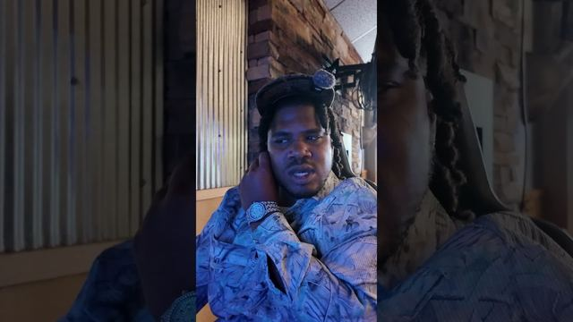
A musician makes the case for solitude as a working method, not loneliness, but the room it takes to not do what everyone else is doing.
what is free will if you have no self control?
-
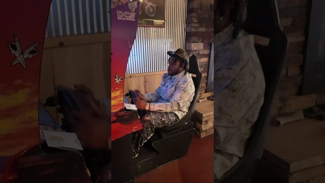
Asked how he approaches social media as a musician, he starts from the business side: you do not make money without spending it in the right places, and lands somewhere more personal.
I want my post to mean something
-
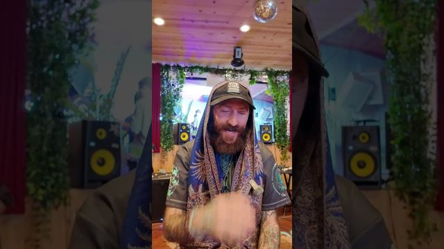
An odd question to put to somebody on the street, asked twice because he did not catch it the first time, and told he does not have to keep it kid-friendly.
chase your dreams. Never give up. Just stay positive
-
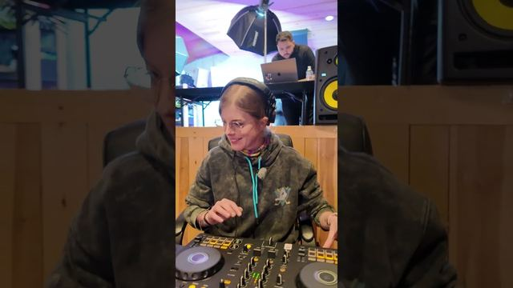
Caught mid-mix an hour or so before a pop-up, and it is exactly as unglamorous as it should be.
just prepping a little Setsuki for the pop-up
-

On a Denver street, Caveman and a stranger work out that they share a friend, a Boulder glassblower named Josh.
What’s your name, bro?
-
In Denver, Tonya, who came from Seattle with a med card, on how Colorado has changed since weed was legalized.
they were kind of waiting to see how it went.
-
Handed the microphone and asked to paint a picture of his friend, a man in Fort Collins gives an unvarnished profile of the photographer he used to live with, including how the living arrangement...
We got evicted together because we would throw parties
-
Tim lays out the We Them Media vision in Denver, Colorado, and it is not a business plan.
we’re just trying to bring everyone together who wants to be together
-
A producer’s plan for the year ahead: drop at least a track a month, go to a lot of festivals and play everywhere he can.
For this next year, my goal, I’m just gonna really hone in on the craft, honestly. Drop at least a track a month.
-
A visitor two weeks after ETHDenver on his third year at the conference, and what a thinner crowd actually says about who is left: the people there for the values, and the people who have not made their money...
it’s like a lot of people who are like committed
-
Near the end of a longer conversation, the questions stop and the reflecting starts.
I feel like some people don’t even I feel like they’re doing things they’re excited about
-

Two artists in a Denver studio session talk about making more tracks together, a home sub set on concrete and rubber, and Kodak Black.
especially even learning a new thing,
-
Mr.
never be stopped again by a conversation
-
In a car on the way to a songwriting camp, the plan is drone shots at the studio, but a burrito comes first.
Where we at? Can’t even tell you. Where we pulling up to? Pulling up to the studio.
-
Twenty one seconds in Boulder with Swarthyhatter, published by We Them Media on March 9, 2026.
Where we at? We’re at the regen, huh?
-

Asked who he is, he answers by rapping.
I’m a rapper, so you know what this means
-
Part of the Denver TBD series.
I ain’t never seen a bald eagle until I came out here
-

A note to camera from the start of it all, before there was an archive to put it in.
I sold my car yesterday. I scrapped it and I’m staying out here
-
A host has the livestream up and nothing else working: the three minutes before a stream works, kept in.
I just set up the live, but I don’t, I just want, I can’t actually do that.
-

A software engineer and artist opens a panel by introducing the creator community and ecosystem he is building, focused for now on music.
By trade, I’m a software engineer. But by heart I’m an artist.
-

On a We Them Media live stream, a founder announces Africa Ventures, “a $4 million fund exclusively focusing on African Web3 founders.” The fund offers grants “up to $150,000 and equity financing up to half a...
a $4 million fund exclusively focusing on African Web3 founders.
-
Asked what people around him actually understand about crypto, he says it will take time, and he is specific about why: the vocabulary sounds like a foreign language to anyone outside it.
not just stay at the top layer, go deep, go to the markets
-
A nineteen-year-old founder on the dApp he is building to connect investors and founders, because funding today has no gauge.
they give grants or they give things to people like funds, they fund the startups and yeah, there’s nothing to show for it. There’s no gauge.
-
Thirty seconds on the difference between joining something and starting it.
I’ve already started learning programming when I was like a little younger, but then I always wanted to be part of the founding guys.
-
At the Web3Bridge cohort 12 training in Ikorodu, Lagos, Ebuka is asked how the mentors fit into the community, and describes a system that runs on alumni who never left: senior developers still around for the...
The way they take their time to break it down, to make sure that we understand
-
A developer describes what he wants to do with what he knows: take problems that already exist, and the web2 apps already solving them badly, and rebuild them where the record cannot be disputed.
Everything is on-chain. You see your transaction, if it failed or went through
-
Asked what he would say to someone thinking about applying to Web3Bridge, a cohort member does not hedge.
I would tell the person to just pack his bags and come. It’s a great experience.
-
A developer finishing a training cohort explains the product he built: somewhere founders can showcase what they have made, and investors can browse it and back the ones that make...
they invest on it based on milestones
-
Asked how people around him think about crypto, a builder in Nigeria gives an answer with no price in it.
we’re starting to need transparency in Africa
-
Asked whether there was a single aha moment in learning blockchain, a developer declines the premise.
no matter what, it’s not going to come easily
-
A We Them Media member announces the partnership with Pizza DAO for Global Bitcoin Pizza Day on 22 May: the day that marks the first time bitcoin bought something in the real world, and what it bought was...
It’s the voice for the voiceless of Africa
-
JED, whose artist name Ebenezer means a stone of help, on his plan to build food banks where people can eat without paying.
It’s going to be the mother company of everything that Ebenezer is. Jed is Ebenezer.
-
Patience, in Nigeria, on the podcast she wants to start: relatable guests on money, health and depression, so listeners feel less alone.
I would want to give people opportunity to express themselves and drop their opinions and also learn.
-
Artist and founder Leo Pastel on the free NFT collector tracker his team built at the ETH Denver 2024 build-a-thon.
a hackathon where people, there’s a bunch of sponsors who put up bounties,